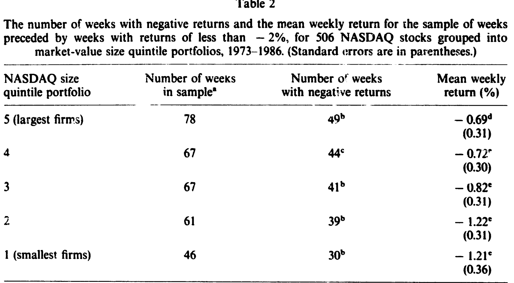
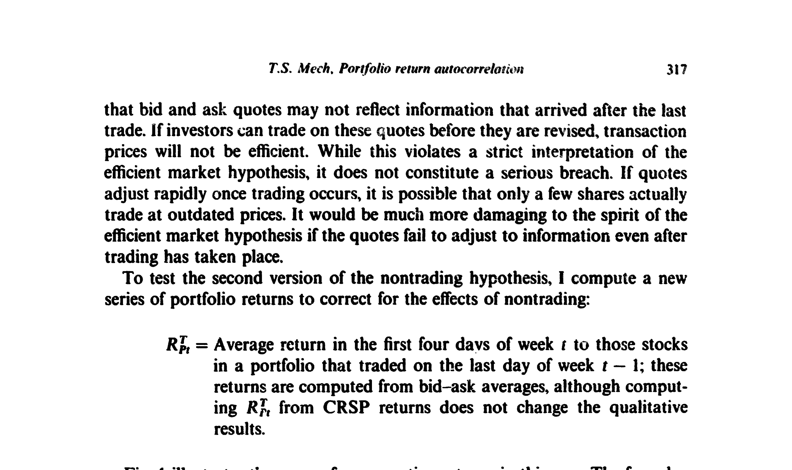
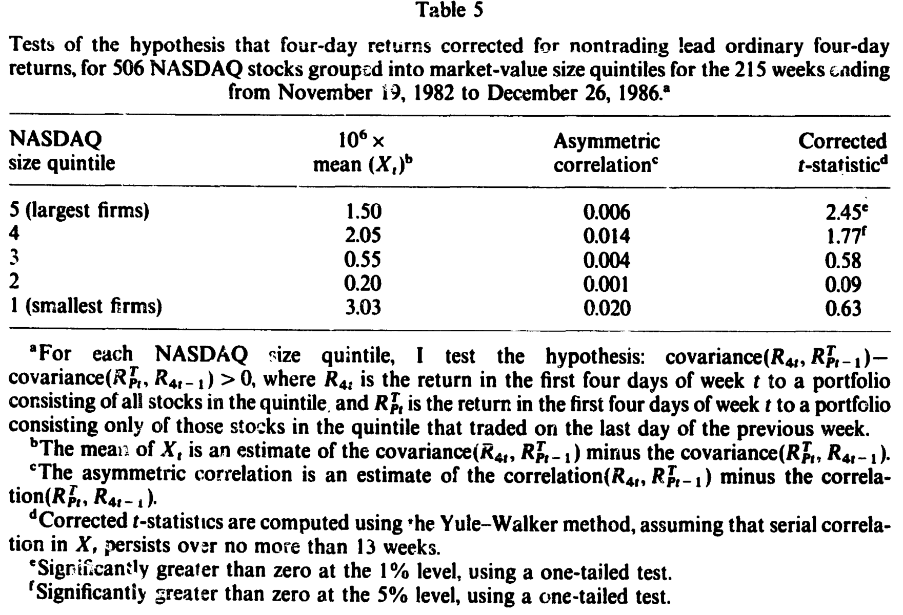
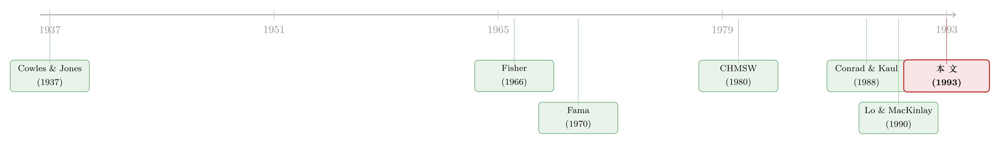

部分明明是随机的，整体却能被预测——一桩组合自相关的悬案
本文读的是 Mech (1993, Journal of Financial Economics)：单只股票的周收益几乎不可预测，可把它们装进一个组合，组合收益却强烈正自相关——小盘股组合的一阶自相关高达 0.490。作者把五种解释拉到同一张擂台上逐一对质，最后落在一个朴素却扎实的答案上：是交易成本拖慢了价格调整，而且价格调得快不快，取决于「估值变动相对买卖价差有多大」。
1 一桩自相矛盾的悬案
先说一个让人有点不舒服的事实。
如果你去看单只股票的日收益或周收益，它们从这一期到下一期，基本是不相关的。Fama (1970) 以及在他之前的许多人，正是拿这一点当作市场有效假说 (efficient market hypothesis) 的证据：价格已经把信息消化干净了，所以你没法用昨天的收益预测今天的收益。
可问题来了。把这些「各自独立」的股票打包成一个组合，奇怪的事情发生了：组合收益变得强烈正自相关。这不是新发现——早在 Cowles and Jones (1937) 就注意到了——但它的顽固程度仍然刺眼。在 Mech 用来做研究的样本里，最小市值组合的周收益一阶自相关接近一半（0.490），而且各个组合的收益至少在滞后三周时都还显著相关，最小组合甚至能显著到第五周。
于是一个自然的、却让人头疼的问题摆在面前：为什么部分是随机的，整体反而是可预测的？
这正是这篇论文的全部张力所在。一个组合不过是它成分股的加权平均，成分股都不自相关，平均出来的东西凭什么自相关？答案的钥匙，藏在一句听上去近乎同义反复、却极其关键的话里。
2 关键的那把钥匙：延迟为什么要「不一样」
我们先把这把钥匙打磨清楚，因为后面所有的检验都是围着它转的。
设想一条市场层面的消息（比如美联储动作、宏观数据）同时砸向组合里的所有股票。如果所有股票都以完全相同的延迟去反映这条消息——哪怕都慢半拍——那么组合会在某一期一次性地、整整齐齐地把消息吃进去。结果是组合收益有一个滞后，但不会自相关：信息一次性进来，没有跨期的拖尾。
组合收益之所以自相关，恰恰是因为不同股票以不同的延迟反映同一条市场信息。有的股票当周就调好了价，有的拖到下周才动，于是同一条消息被摊到了好几周里，前后期的收益就被这条共同消息「缝」在了一起，正自相关就这么长出来了。
这也解释了一个容易被忽视的陷阱：当某个「修正后」的组合收益自相关变弱时，并不必然意味着价格调得更快了——也可能只是各股票的延迟变得更整齐了。弱自相关 ≠ 短延迟。后文里这个区分会反复救场。
所以真正要回答的问题不是「有没有延迟」，而是「为什么不同股票的延迟会不一样」。每一种解释，本质上都是在给这个「延迟的离散度」提供一个不同的来源。这篇论文的全部工作，就是把这些来源一个个抓出来审问。
把这个思路落到可检验的统计量上，作者沿用了 Lo and MacKinlay (1990) 与 Mech (1990) 的非对称序列交叉协方差。逻辑很简单：如果一个假设是对的，那么按这个假设「修正」掉延迟来源后得到的修正收益 \(R_{Mt}\)，其延迟应当比基准收益 \(R_{Bt}\) 更短；延迟更短的序列会领先延迟更长的序列。用协方差写出来，就是
$$\text{cov}(R_{Mt}, R_{B,t-1}) - \text{cov}(R_{Bt}, R_{M,t-1}) > 0$$
在均值随时间不变的假设下，检验它等价于检验下面这个构造量 \(X_t\) 的均值是否大于零：
\(X_t\) 本身由两条自相关序列构造而来，自己也是自相关的。作者因此用 Yule–Walker 方法对 \(X_t\) 回归一个常数截距，假定 \(X_t\) 的自相关不超过一个季度（13 周），截距的 t 值即所谓「修正 t 统计量」（corrected t-statistic）。
但真正精妙的一步在于作者对这个 t 检验的自我怀疑。他指出：当修正收益与基准收益几乎一模一样时，\(X_t\) 的方差极小，于是哪怕非对称交叉协方差小到没有任何经济意义，修正 t 值也可能高度显著。极端地，假设修正组合只比基准组合少了一只股票，那 t 检验实际上不过是在问「这只被删掉的股票，到底领先还是落后于其余组合」——结果可以统计上极显著，经济上却无关紧要。
所以作者额外报告一个经济重要性的度量：把 \(X_t\) 的样本均值除以两条收益序列的样本标准差，得到非对称序列交叉相关系数。它衡量的是「\(R_{Mt}\) 预测 \(R_{Bt}\)，比 \(R_{Bt}\) 预测 \(R_{Mt}\) 究竟好多少」。记住这个「显著但微弱」的张力，它是全文最锋利的地方。
3 数据与擂台规则
样本来自 CRSP 的 NASDAQ 证券数据——之所以盯着 NASDAQ 而不碰主板，一是因为主板专家（specialist）的报价规则会把价格调整过程搅复杂，二是 CRSP 的买卖报价数据当年只对 NASDAQ 可得。作者要求股票在 1972 年底到 1986 年间全程被 CRSP 覆盖（这引入了一点幸存者偏差，但作者论证它只会让检验更保守），最终得到 506 只 NASDAQ 股票。
按每年末的市值把它们分成五个规模五分位组合，等权、每周再平衡，用买卖报价均值（bid-ask average）算收益，校正股利与拆股。从 1973 年 1 月到 1986 年 12 月，每个组合算出 730 个周收益。
擂台规则统一：每个假设都用「基准收益 vs 修正收益」的对照来检验。基准收益是普通的规模五分位组合收益；修正收益是同一个五分位、但用某种方式把该假设所主张的延迟来源消掉之后的收益。然后比三样东西——一阶自相关、非对称交叉相关、修正 t 值。
下面，五位嫌疑人逐一登场。
4 第一位嫌疑人：时变的预期收益
第一种解释最让人安心，因为它完全不违反市场有效假说——Conrad and Kaul (1988) 以及后续的一系列研究都假设：可预测的那部分收益，反映的是预期收益本身在变。
怎么证伪它？作者用了一个极简却有力的约束：组合的预期收益应当大于零。一个承担系统性风险的组合，其预期收益必然高于无风险利率。如果可预测性真的来自时变预期收益，且预期收益永远为正，那你就不应该能预测出负收益。
可正自相关恰恰意味着「低于平均的收益，往往跟着另一个低于平均的收益」。于是作者去看那些「大跌之后的一周」——把上一周收益低于 −2%（约一个标准差）的周挑出来，看下一周发生了什么。
如表 2 所示，这些周的平均收益全是负的，而且数目可观，从最大组合的 −0.69% 一路到小组合的 −1.21%，远远落在任何合理预期收益的取值范围之外。换句话说，组合自相关能被用来预测负收益——这是时变预期收益模型无论如何也圆不过去的。第一位嫌疑人当场出局：组合自相关更像是错误定价 (mispricing) 的证据，而非预期收益在动。

Table 2
5 第二位嫌疑人：非交易
第二种解释来自 Fisher (1966)：有些用来算组合收益的价格已经过时了，因为那些股票根本没在交易。小股票交易得比大股票稀疏，这恰好能解释「自相关随规模递减」的现象——看上去顺理成章。
非交易的潜在分量确实不小：在样本期内，大盘组合里平均每天有 99.1% 的股票成交，而小盘组合只有 65.4%。所以对小盘组合，非交易理论至少有发挥空间。
但非交易其实有两个版本，作者拆开来打。
版本一：成交价过时。 收益常用成交价算，若股票不是在持有期最后一刻成交，成交价就没反映最新信息。要消掉它，只需改用收盘买卖报价均值算收益——如果做市商对信息反应灵敏，报价就该无延迟地反映信息，从而报价收益应当领先成交价收益。结果呢？修正 t 值全都又小又符号错误（五个分位分别约为 0.10、−0.71、−0.43、−1.59、−1.01），除最小组合外一律是「错的方向」。更直接的反证是：报价收益的自相关不降反略升——小盘组合从 0.489（CRSP 收益）变成 0.490（买卖报价收益），大盘组合从 0.247 升到 0.266。
版本二：报价本身也慢。 更要命的可能是，做市商在没有成交时懒得更新报价，于是连报价都没反映信息。作者为此设计了一个巧妙的「四日修正收益」 \(R^4_{Ft}\)：只取那些在上周最后一天确实成交过的股票，算它们本周前四天的收益。

Figure 1: illustrates the reason for computing returns in this way. The four-day
如图 1 所示，这个设计的妙处在于信息的完全隔离：若股票在第 1 周周五成交，且价格在成交时已充分反映当时全部信息，那么第 2 周的四日收益只能反映周五成交之后才到达的信息——它与第 1 周的四日收益必然反映完全不同的信息集。如果自相关真的全由非交易造成，这样构造出来的修正收益就该是序列不相关的。
作者对每个分位算了 1982 年 11 月 19 日到 1986 年 12 月 26 日共 215 周的四日修正收益。结果：大盘组合的普通四日收益自相关 0.237、修正后 0.236，几乎没变（意料之中，它本来就几乎全天成交）；小盘组合从 0.453 降到 0.402——有所下降，但远谈不上消失。即便校正了非交易，那两条老规律依旧岿然不动：组合收益强烈自相关，且小盘更甚。
更精细的领先—滞后检验列在表 5 里：所有组合都呈现「修正收益领先普通收益」的预测符号，但非对称交叉相关系数小得可怜（如最大组合 0.006、次大 0.014）。这里正是第 2 节那个陷阱的现场演出——修正 t 值只在两个最大组合上显著（2.45 与 1.77），可那恰恰是因为修正收益与普通收益太像，让 t 检验变得过分敏感；经济上，这个领先关系微弱到几乎可以忽略。

Table 5
结论很克制也很诚实：非交易只能解释组合自相关中很小的一部分。（关于「部分调整还是陈旧价格」这条线上的另一种巧妙拆解，可参见《指数会「记仇」，期货却转头就忘》。）
6 第三、第四位嫌疑人：陈旧限价单与做市商策略
接下来两位来自市场微观结构文献，特别是 CHMSW (1980) 那条脉络。
陈旧限价单 (stale limit orders)。 旧的限价单会在不反映最新信息的价格上成交，让成交价看上去是「渐进」调整的。要消掉它，可以改用 NASDAQ 收盘报价、或干脆用报价中位数 / 内部报价来算收益。
做市商策略。 做市商出于库存管理、或在买卖报价上玩点花样（比如报价上调慢、下调快，制造一种领先—滞后的错觉），也可能人为制造延迟。作者用相应的修正收益序列去剥离这些效应。
这两位嫌疑人的审讯结果同样清楚：它们对组合收益的可预测性都只起到微不足道的作用。微观结构层面的这些小动作，解释不了那个高达近 0.5 的自相关。（动量与自相关到底是谁制造的，这条争论本身极有意思，可参见《动量到底是「谁」在续命？》与《负的协方差，凭什么就证明了「过度反应」？》。）
于是擂台上只剩最后一位。
7 反转：交易成本，和那个「相对于价差」的关键限定
前面四位嫌疑人被逐一排除后，反转出现了——最朴素的那个解释反而最经得起推敲。
CHMSW (1980) 早就提示过：交易成本本身就能诱发价格调整延迟。直觉是这样的：信息来了，价格「应该」动；但只要估值的变动还没大到值得你付出买卖价差去交易，理性的投资者就会按兵不动，价格于是停在原地，看上去「反应迟钝」。等到估值变动累积得足够大、大到能盖过价差，交易才发生、价格才一次性跳到位。
这就引出了这篇论文真正的理论贡献——一个把价格调整速度和买卖价差与收益波动率联系起来的模型。它的核心预测一句话就能说清：
价格调整的快慢，不取决于价差的绝对大小，而取决于「估值变动相对于价差有多大」。 当一只股票的估值变动相对它的买卖价差很大时（即波动率/价差比高），它会被更快地交易、价格更快调到位；反之，价差相对波动率越宽，价格就越「黏」。
这个限定词——「相对于价差」——是整篇论文的灵魂。它把一个含糊的「交易成本拖慢价格」变成了一个可证伪的横截面预测：在任一时点，把股票按「波动率相对价差」排序，比值高的那些应当调整得更快、延迟更短。
作者据此做了两类检验。横截面检验支持这个预测：在股票之间比较，确实是那些估值变动相对价差更大的股票，价格调整得更快。但时间序列检验不支持：在同一批股票的时间维度上，这个关系并没有干净地显现出来。
这是一个诚实得有点扎心的结论。证据最一致于交易成本模型，但这个一致性只在横截面上成立，在时间序列上落了空。作者没有把话说满——他给出的是「最可能的嫌疑人」，而不是「铁证如山的凶手」。
8 文献脉络
把这条线索按时间铺开，故事其实很连贯。
最早是 Cowles and Jones (1937)，第一次发现组合收益里藏着可预测的成分。接着 Fama (1970) 用单只股票的「无自相关」把市场有效假说立了起来——于是「个股随机、组合可测」的张力被正式摆上台面。
然后，解释开始分两条路走。一条路想在有效市场内部消化这个异象：Fisher (1966) 提出非交易/陈旧价格（但他自己也嘀咕，延迟长得不像纯非交易能解释）；Conrad and Kaul (1988) 则把可预测性归给时变的预期收益。另一条路把矛头指向交易的执行方式：CHMSW (1980) 把微观结构理论与股价行为接上头，并第一次提示「交易成本能诱发调整延迟」。

真正给这场争论提供武器的，是 Lo and MacKinlay (1990) 的非对称序列交叉协方差——它让「谁领先谁」第一次变得可度量；Froot and Perold (1990) 则给出指数自相关源于市场信息处理低效的证据。本文（连同作者的博士论文 Mech (1990)）站在这条脉络的交汇处：它不发明新异象，而是把所有现成的解释拉到同一套对照检验下逐一淘汰，最后把交易成本模型往前推了关键一步——给它装上「相对于价差」这个可检验的限定。
9 评论与延伸（Q&A + 研究方向）
(a) 几个可能的疑问
Q：组合自相关这么强，为什么不能简单归结为「小盘股就是慢」？
因为「慢」本身解释不了自相关——如果所有小盘股都同样地慢，组合只会有滞后而非自相关。自相关要求的是延迟的离散度：不同股票以不同延迟反映同一条市场消息。本文的全部功夫，正是去找「延迟为什么会不一样」的来源，而非「延迟为什么存在」。
Q：非交易被否掉，靠的是那个「不降反升」的自相关，这个证据可靠吗？
相当可靠，因为它方向明确。非交易理论预测报价收益的自相关应低于成交价收益；而数据给出的是小盘
0.489 → 0.490、大盘0.247 → 0.266，全都轻微上升。一个被预测会下降的量却上升了，这是比「不显著」更硬的反证。
Q：表 5 里修正 t 值显著，怎么还说非交易作用微弱？
这正是本文方法论上最聪明的一笔。当修正收益与基准收益几乎相同时，\(X_t\) 方差极小，修正 t 检验会变得过分敏感——它实际上只在检验「那一小撮差异股票领不领先」，统计上可以极显著，经济上却无关紧要。所以作者另报非对称交叉相关作为效应量，而它小到
0.006、0.014这个量级，揭穿了显著性的虚火。
Q：交易成本模型的核心预测，和「价差大就调得慢」有什么不同？
关键在「相对」二字。不是价差绝对值大就慢，而是价差相对于估值波动大才慢。同样 5 美分的价差，对一只日内常有大幅估值变动的股票几乎不构成障碍，对一只波动温吞的股票却足以让人按兵不动。这个比值化的设定，才让模型在横截面上可证伪。
Q：为什么横截面检验支持、时间序列检验却不支持？这是模型的失败吗？
不算彻底失败，但确实是软肋。横截面识别的是「股票之间」波动率/价差比的差异，信号干净；时间序列要识别「同一批股票随时间」的比值变化，既受宏观波动率与价差共同漂移的干扰，又面临更弱的信噪比。两者背离提醒我们：交易成本可能是横截面延迟差异的主因，却未必是时间维度上自相关起伏的主因。
Q：只用 NASDAQ、又加了全程覆盖的筛选，结论能外推到主板吗？
要谨慎。作者主动回避主板，是因为专家报价规则会改变价格调整过程；而全程覆盖的要求引入了幸存者偏差（他论证这只会让检验更保守，因为压缩了规模的横截面方差）。所以结论在 NASDAQ 这种纯做市商驱动市场内部是稳健的，外推到专家市场则需要重新检验。
(b) 几个可能的研究问题与提案
提案一：把「波动率/价差比」搬到公司债市场重做时间序列检验。
【经济故事】公司债天生交易稀疏、价差宽，正是「相对于价差的估值变动」决定价格黏性的理想场景；本文时间序列检验的失败，可能源于股票波动率/价差比的时间变异太小，而信用市场在危机前后比值剧烈摆动，信噪比更高。
【可行性】中。需 TRACE 逐笔成交加买卖报价、或机构报价数据；识别上可用发行人层面的固定效应吸收横截面差异，专测时间维度。难点是公司债的「真实价值」更难刻画，需借结构模型或同发行人股票做代理。
提案二：外资持有人的进入，会不会改变股票的「调整速度」横截面？ 【经济故事】若交易成本（价差相对波动率）决定调整速度，那么外资进入带来的流动性改善与价差收窄，应当让被「可投资」的股票调整得更快、组合自相关下降。这是把本文机制接到一个外生冲击上的自然延伸。 【可行性】中高。可用新兴市场「可投资度」开放作为准自然实验，配合个股价差与波动率数据；识别策略是开放前后、可投资 vs 不可投资股票的双重差分。已有相关脉络（可参见《外资能买的股票，为什么更「抖」？》），数据可得。
提案三：用高频数据直接验证「估值变动盖过价差才交易」的微观机制。
【经济故事】本文的模型预测是关于「何时发生交易」的——估值累积变动跨过价差阈值的那一刻才成交。这在日频数据里只能间接推断，但在逐笔/逐秒数据里可以直接观测成交是否聚集在估值变动跨过价差的时点。
【可行性】高。TAQ 类高频数据齐备；可用已实现波动率与实时价差构造「触发阈值」，检验成交概率是否随该阈值被跨越而跳升。识别相对干净，主要工作量在微观计量与定义估值代理。
提案四：把横截面与时间序列检验的背离本身当成研究对象。 【经济故事】本文最耐人寻味之处是两类检验给出相反结论。这未必是模型错，而可能是两种识别在捕捉不同层次的延迟来源。系统地刻画「什么时候横截面有效、什么时候时间序列有效」，本身就能深化对价格调整机制的理解。 【可行性】中。需在多市场、多资产类别上复制本文的两类检验，比较其分歧的系统性模式；识别上偏描述性与方法论，doable，但贡献的清晰度取决于能否提炼出可解释的规律。
10 我的判断
这是一篇方法克制、结论诚实的论文，放在 1993 年看相当有分量。它的真正贡献不在于「发现」了交易成本能解释组合自相关——CHMSW 早有提示——而在于它建了一座统一的淘汰擂台：把时变预期收益、非交易、陈旧限价单、做市商策略、交易成本五种解释，用同一套「基准 vs 修正收益 + 非对称交叉协方差」的框架逐一对照，并清醒地区分「统计显著」与「经济重要」。光是后面这一点——主动指出修正 t 检验在两条序列高度相似时会虚高，并补一个效应量度量——就值得今天做实证的人反复体会。
对识别的担忧有三。其一，交易成本模型的核心预测只在横截面成立、时间序列落空，这个背离作者没能完全讲清，模型的「胜出」因此是相对的、而非决定性的。其二，整个研究困在 NASDAQ 与全程覆盖的样本里，外推性受限。其三，「波动率相对价差」这个比值的构造对波动率与价差的测量误差很敏感，而 1980 年代的 NASDAQ 报价数据质量本身就有限。
后续我最想看到的，是把这套机制接到一个外生流动性冲击上去——无论是外资开放、最小报价单位改革，还是做市商结构变化——让「价差相对波动率下降 ⇒ 价格调整加快 ⇒ 组合自相关下降」这条因果链，能在准自然实验里被干净地识别出来。本文给出的是一个有说服力的横截面相关，而这条链最需要的，恰恰是它暂时还没能提供的因果证据。
参考文献
Cohen, Kalman J., Gabriel A. Hawawini, Steven F. Maier, Robert A. Schwartz, and David K. Whitcomb (1980). Implications of microstructure theory for empirical research on stock price behavior. Journal of Finance 35(2), 249–257.
Conrad, Jennifer, and Gautam Kaul (1988). Time-variation in expected returns. Journal of Business 61(4), 409–425.
Cowles, Alfred, and Herbert E. Jones (1937). Some a posteriori probabilities in stock market action. Econometrica 5(3), 280–294.
Fama, Eugene F. (1970). Efficient capital markets: A review of theory and empirical work. Journal of Finance 25(2), 383–417.
Fisher, Lawrence (1966). Some new stock-market indexes. Journal of Business 39(1), 191–225.
Froot, Kenneth, and André Perold (1990). New trading practices and short-run market efficiency. NBER Working Paper No. 3498.
Lo, Andrew W., and A. Craig MacKinlay (1990). When are contrarian profits due to stock market overreaction? Review of Financial Studies 3(2), 175–205.
Mech, Timothy S. (1990). An explanation for the time-series properties of stock returns. Ph.D. dissertation, University of Rochester.
Mech, Timothy S. (1993). Portfolio return autocorrelation. Journal of Financial Economics 34(3), 307–344.